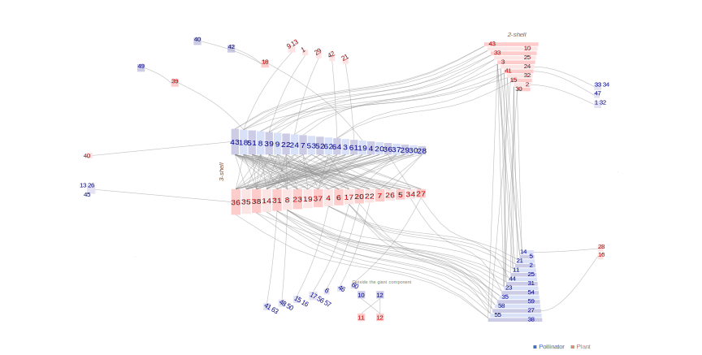

Network: M_PL_002

Pollinator 1 Alloscirtetica.rufitarsis, 2 Alloscirtetica.sp1.M_PL_002, 3 Andinus.venustus, 4 Anthidium.funereum, 5 Anthidium.sp1.M_PL_002, 6 Ateloglutus.sp1.M_PL_002, 7 Auca.coctei, 8 Bombus.dahlbomii, 9 Caenohalictus.sp1.M_PL_002, 10 Centris.cana, 11 Centris.cineraria, 12 Centris.nigerrima, 13 Chilicola.sp1.M_PL_002, 14 Coleoptera.sp8.M_PL_002, 15 Colletes.fulvipes, 16 Colletes.sp1.M_PL_002, 17 Dasybasis.sp1.M_PL_002, 18 Diptera.sp2.M_PL_002, 19 Etcheverrius.chilensis, 20 Faunula.leucoglene, 21 Gayella.reedi, 22 Habromyia.lipoflava, 23 Hymenoptera.sp4.M_PL_002, 24 Hypodynerus.sp1.M_PL_002, 25 Hypodynerus.sp2.M_PL_002, 26 Hypodynerus.sp3.M_PL_002, 27 Lepidoptera.sp7.M_PL_002, 28 Lyophlaeba.lugubris, 29 Megachile.semirufa, 30 Megachile.sp1.M_PL_002, 31 Megachile.sp2.M_PL_002, 32 Megachile.sp3.M_PL_002, 33 Megachile.sp4.M_PL_002, 34 Megachile.sp5.M_PL_002, 35 Phulia.nymphula, 36 Prosopochaeta.caliginosa, 37 Prosopochaeta.sp1.M_PL_002, 38 Pseudolucia.chilensis, 39 Scaeva.melanostom, 40 Spathipalpus.philippii, 41 Tatochila.mercedis, 42 Tatochila.sp1.M_PL_002, 43 Unidentified.sp1.M_PL_002, 44 Unidentified.sp10.M_PL_002, 45 Unidentified.sp11.M_PL_002, 46 Unidentified.sp12.M_PL_002, 47 Unidentified.sp13.M_PL_002, 48 Unidentified.sp14.M_PL_002, 49 Unidentified.sp15.M_PL_002, 50 Unidentified.sp16.M_PL_002, 51 Unidentified.sp3.M_PL_002, 52 Unidentified.sp5.M_PL_002, 53 Unidentified.sp6.M_PL_002, 54 Unidentified.sp9.M_PL_002, 55 Vibrissomyia.sp1.M_PL_002, 56 Villa.arenari, 57 Villa.flavicura, 58 Villa.gayi, 59 Villa.hypoxantha, 60 Villa.semifuscata, 61 Villa.sp1.M_PL_002, 62 Villa.verdensis, 63 Yramea.lathonoides, 64Yramea.modesta
Plant
1 Acaena pinnatifida, 2 Anarthrophyllum cumingii, 3 Anarthrophyllum gayanum, 4 Astragalus curvicaulis, 5 Azorella bolacina, 6 Azorella monantha, 7 Berberis empetrifolia, 8 Calandrinia affinis, 9 Calandrinia dianthoides, 10 Calandrinia sericea, 11 Calceolaria arachnoides, 12 Calceolaria biflora, 13 Cardamine nivalis, 14 Cerastium arvense, 15 Cerastium montioides, 16 Chaetanthera apiculata , 17 Chaetanthera euphrasioides, 18 Chaetanthera pusilla, 19 Chuquiraga oppositifolia, 20 Discaria nana, 21 Erigeron andicola, 22 Euphorbia portulacoides, 23 Laretia acaulis, 24 Loasa caespitosa, 25 Mutisia sinuata, 26 Nassauvia axillaris, 27 Nassauvia heterophylla, 28 Nassauvia pungens, 29 Nothoscordum andinum, 30 Oxalis cinerea, 31 Oxalis compacta, 32 Oxalis geminata, 33 Ranunculus peduncularis, 34 Sanicula graveolens, 35 Senecio bustillosianus, 36 Senecio erucaeformis, 37 Senecio francisci, 38 Senecio sp1 M_PL_002, 39 Stenodraba stenophylla, 40 Tristagma bivalve, 41 Tropaeolum polyph, 42 Viola philippii, 43Werneria pygmaea
Arroyo, M.T.K., R. Primack & J.J. Armesto. 1982. Community studies in pollination ecology in the high temperate Andes of central Chile. I. Pollination mechanisms and altitudinal variation. Amer. J. Bot. 69:82-97. Cordon del Cepo, Chile